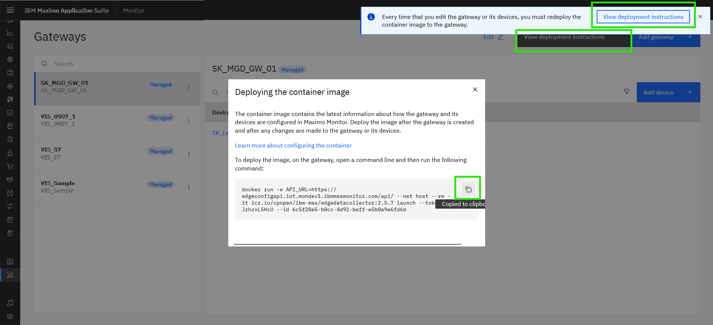
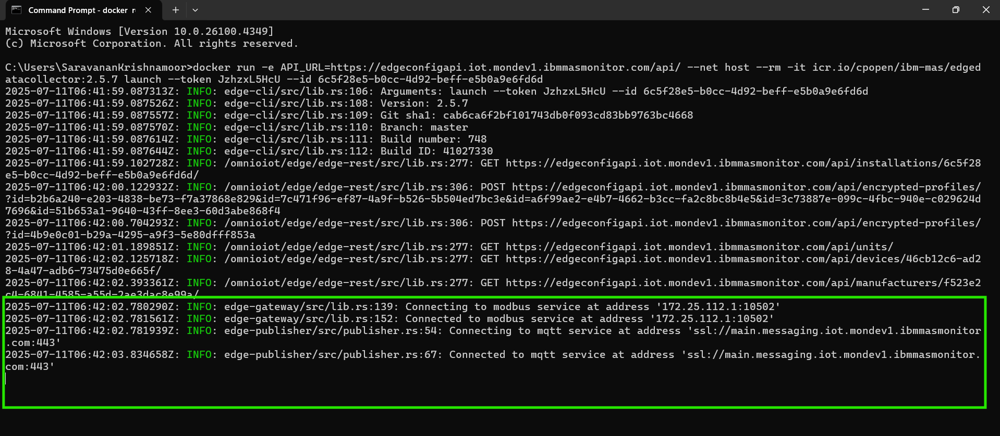
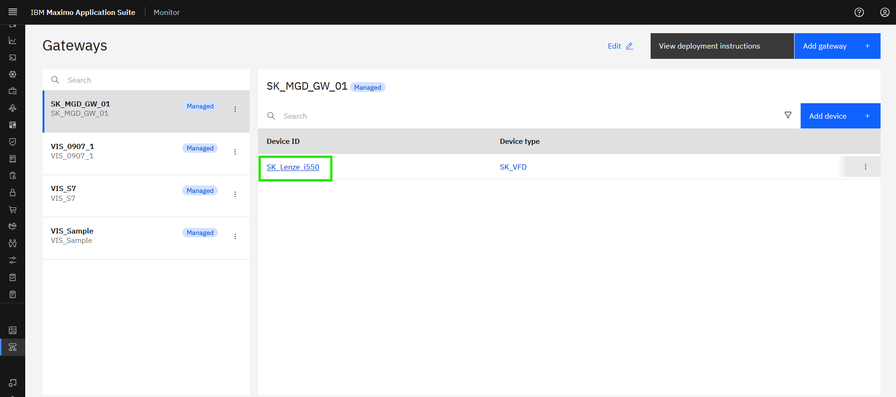
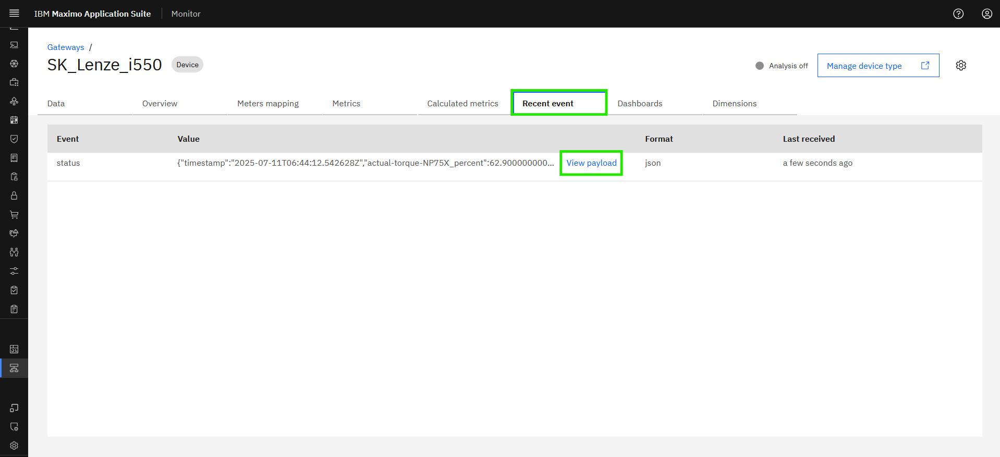
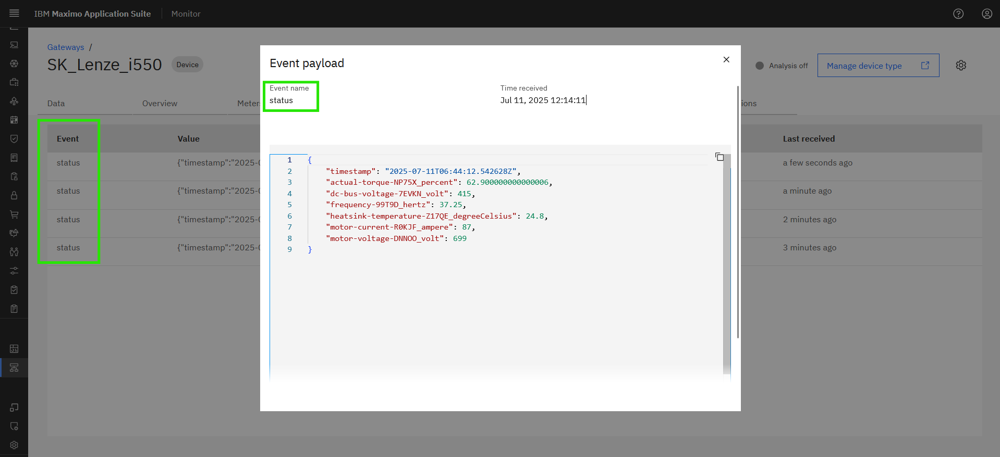
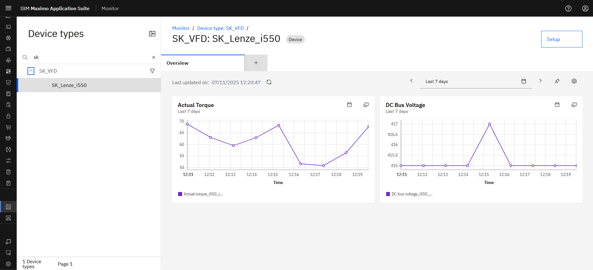

Objectives
In this Exercise you will learn how to:
- Deploy the Managed Gateway
- Verify data inflow
Before you begin:
This Exercise requires that you have:
- completed the pre-requisites required for all labs and for this exercise
- completed the previous exercises
- verified the simulator is running as described in exercise 1
Deploy the Managed Gateway
While looking at your Managed Gateway in the Gateways list, press the View deployment instructions.
Click on the docker command to copy it to the clipboard:

Open a terminal window (Mac/Linux) or Command window (Windows) where you want to run the Managed Gateway and then paste the docker command line from the clipboard. Click enter to execute it, and you should see something similar to the following: 
Tips
You can see that the Managed Gateway have succesfully established a connection to the Modbus Simulator using the modbus protocol. Secondly you can also see the MQTT connection is established between Managed Gateway and Maximo Monitor
The first time you deploy you might get a response like: Unable to find image 'icr.io/cpopen/ibm-mas/edgedatacollector:2.5.7' locally
Please be patient while the Edge Data Collactor docker container is bering downloaded and started.
If any changes made in the gateway/devices. We need to Re-deploy the docker command. Before re-deploying please stop the old docker container using docker stop <Container ID>.
To get the container ID use docker ps, It will give the list of docker containers running.
Verify the selected Lenze VFD data flowing into Monitor
Click to open the XX_Lenze_i550 device:

Navigate to Recent event and wait for a minute (you know those 60000ms defined when adding the device) until the first message is coming through.

Click on View payload and see the data points being send to the Event name status:

These are the data points that you selected when adding the device to the Managed Gateway:
{
"timestamp": "2025-07-11T06:44:12.542628Z",
"actual-torque-NP75X_percent": 62.900000000000006,
"dc-bus-voltage-7EVKN_volt": 415,
"frequency-99T9D_hertz": 37.25,
"heatsink-temperature-Z17QE_degreeCelsius": 24.8,
"motor-current-R0KJF_ampere": 87,
"motor-voltage-DNNOO_volt": 699
}
Potentially the stored data could be used in a dashboard for the VFD device: 
Congratulations you have successfully deployed and verified the connectivity and data inflow, and thereby completed this Maximo Lab.